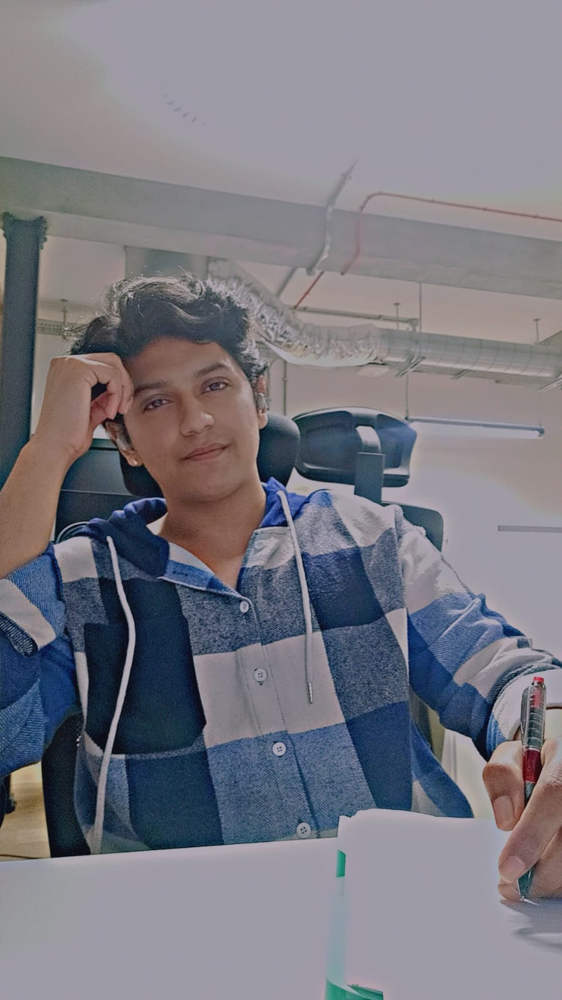

About
I'm Nikhilesh Gawhale, an AI/ML engineer with a passion for transforming data into actionable insights. I leverage advanced machine learning, natural language processing (NLP), and computer vision techniques to build innovative, high-performance models that push the boundaries of AI-driven solutions. With a strong foundation in AI, I specialize in designing and deploying models that not only solve complex problems but also drive impactful results across various industries.
I have completed my Master’s in Artificial Intelligence at Queen Mary University, London (2023-2024), where I honed my expertise in a range of AI-related disciplines. My coursework covered areas such as:
- Natural Language Processing (NLP): Advanced models for language understanding and generation, including transformers and fine-tuning deep learning models.
- Machine Learning: Implementation of cutting-edge algorithms, from supervised and unsupervised learning to deep learning architectures.
- Computer Vision: Developing image recognition and classification models using neural networks and deep learning frameworks.
- Data Processing and Model Deployment: Designing data pipelines, optimizing workflows, and scaling AI models for real-world applications.
Having completed key projects in areas like LLM fine-tuning, Named Entity Recognition (NER) systems, and convolutional neural networks for image classification, I continuously push the limits of what AI models can achieve.